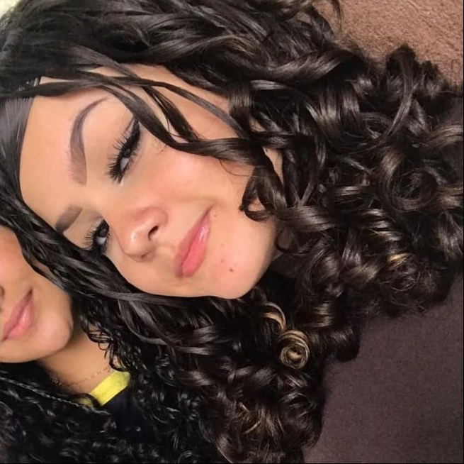

CURRÍCULO VITAE
Luamy Alves Gama
DADOS PESSOAIS

Manauara, Solteira, 15 anos
Data de nascimento:14/04/2007
Endereço:Londrina pr Maestro Erlon Xaves 332
Email:luamy.gama@alunoescolassociais.org.br
OBJETIVO:
Conquistar meu primeiro emprego em jovem aprendiz
EXPERIENCIAS:
nenhuma
EDUCAÇÃO:
- Ensino fundamental 2- Lucia Barros Lisboa (2019-2022)
- Ensino Médio (em andamento) - Escolas Social Marista Irmão Acácio (2023-atual)
- Cursando Tecnico de Informatica para Internet